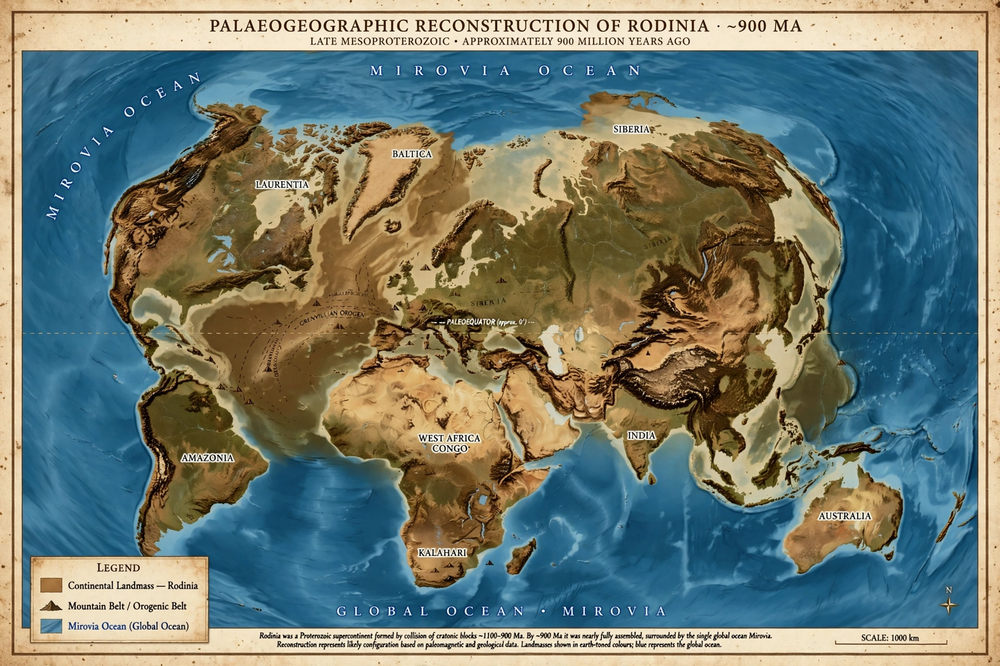

From Wikipedia, the free encyclopedia

Rodinia (from the Russian родина, rodina, meaning "motherland") was a Mesoproterozoic-to-Neoproterozoic supercontinent that assembled about 1.26–0.9 billion years ago and broke up roughly 750–633 million years ago. It was one of the earliest supercontinents in Earth's history, predating the much better known Pangaea by several hundred million years, and its assembly and dispersal are central to understanding the supercontinent cycle, Proterozoic climate extremes, and the environment in which complex life evolved.
Rodinia formed through a series of collisions along the Grenville orogenic belts between about 1.3 and 0.98 billion years ago, during the Grenville orogeny. Its core was Laurentia — the ancient nucleus of North America and Greenland — around which other cratons were arranged: Baltica (Scandinavia and eastern Europe), Amazonia, the West African and Congo cratons, Siberia, and blocks that later became parts of China, India, Australia, and Antarctica. The exact configuration is reconstructed from matching mountain belts, palaeomagnetic data, and shared geological histories, and remains debated; the influential SWEAT hypothesis proposes that southwestern North America was joined to East Antarctica (SWEAT = "Southwest US–East Antarctica connection").
Rifting began around 825–750 million years ago, possibly driven by a mantle superplume and the insulating effect of the supercontinent on the mantle beneath it, and breakup continued through the Ediacaran. The fragmentation of Rodinia created extensive passive continental margins and shallow seas, greatly increasing nutrient runoff — a change some scientists link to rising oxygen levels and the radiation of complex multicellular life. Rodinia's dispersal also coincided with the extraordinary Sturtian and Marinoan "Snowball Earth" glaciations (c. 717–635 million years ago), in which ice may have reached the equator; theories tie the glaciations to enhanced silicate weathering of fresh Rodinian rift basalts drawing down atmospheric carbon dioxide.
Because Rodinia predates the fossil-rich Phanerozoic, its study relies on geochronology, palaeomagnetism, and isotope geochemistry rather than palaeontology. It was the first supercontinent of the "modern" plate-tectonic era for which a global reconstruction has been seriously attempted, succeeding earlier proposed supercontinents such as Columbia (Nuna). Its breakup set the stage for Gondwana and the subsequent Phanerozoic continental configuration in which animal life diversified.